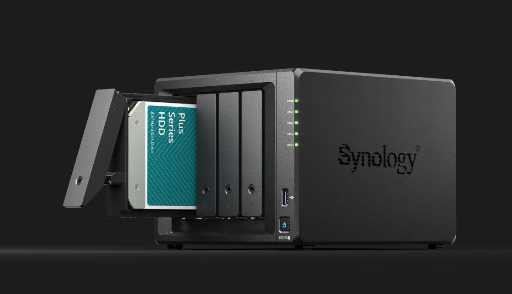
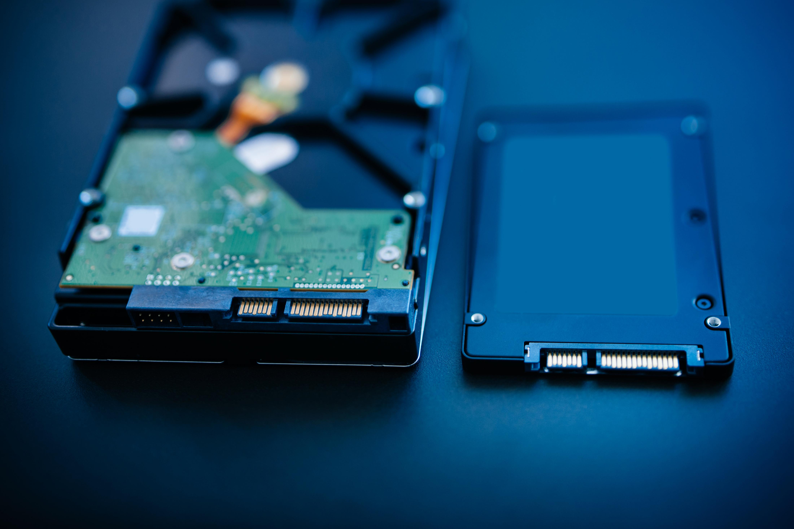
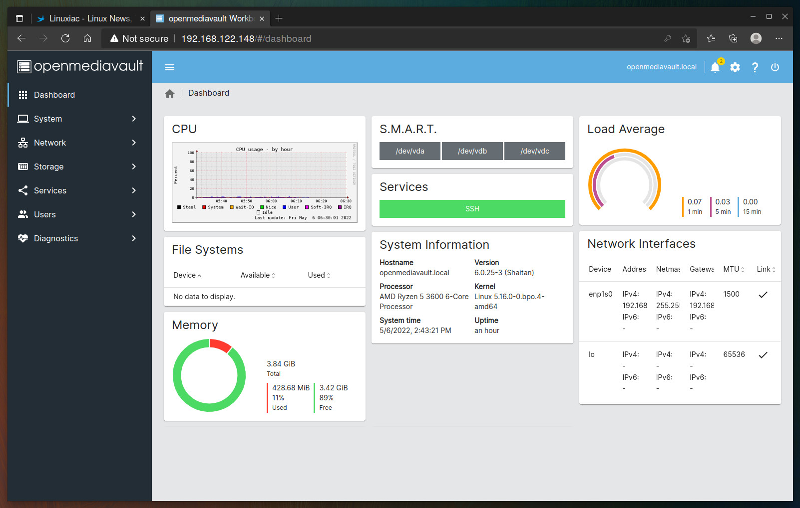
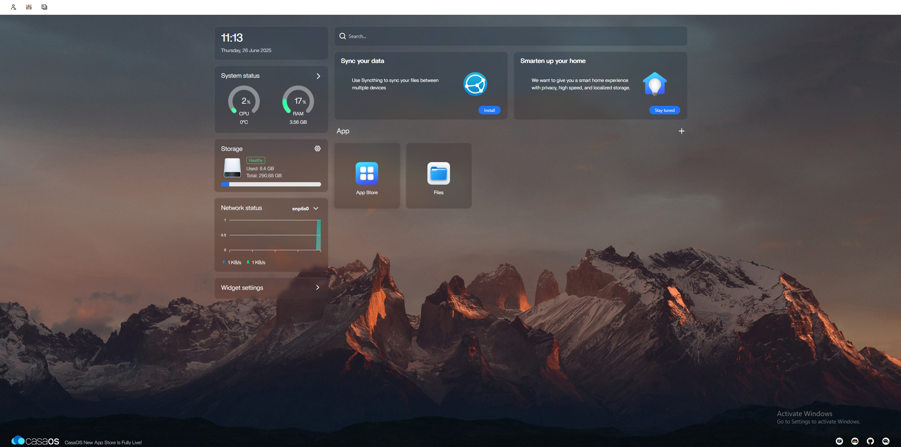
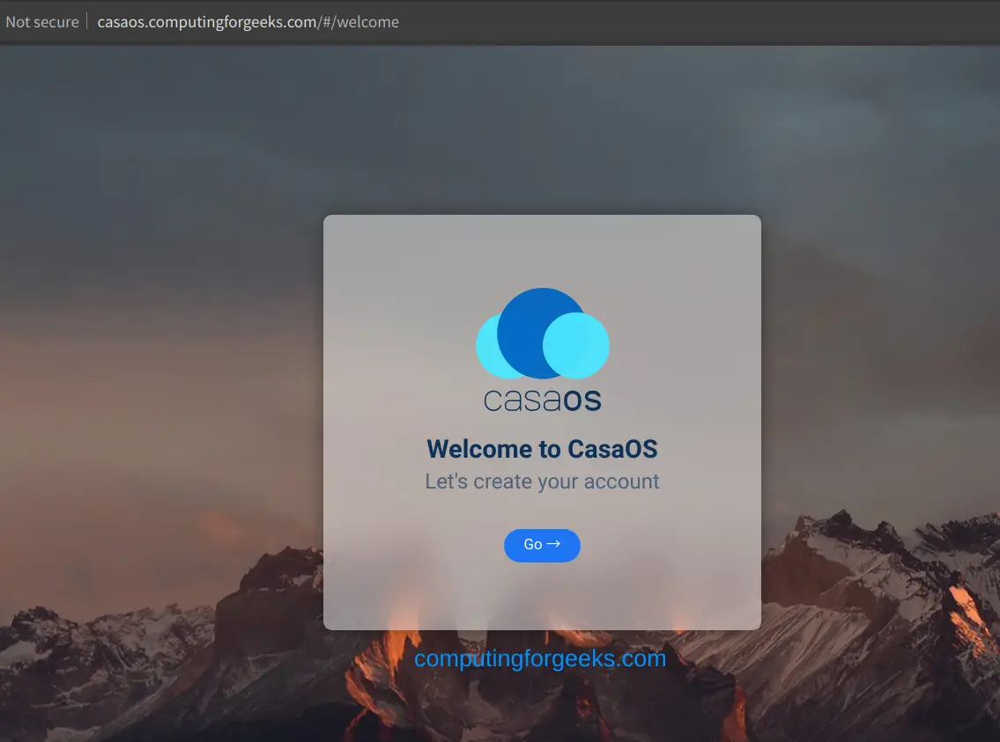
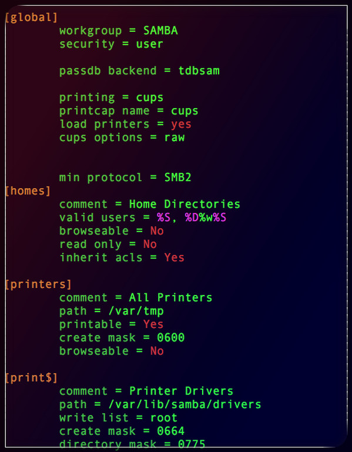

Easiest NAS Build Yet
Once upon a time, I was deep into one of my projects when a friend gave me a call. He's a DJ, and he was looking for a home server to safely store all his tracks—and we're talking terabytes of music. He asked if I could help him figure out a solution.
My first answer? A NAS — Network Attached Storage. It's perfect for media storage, backups, or even building a shared workspace across multiple devices.
Here's the thing: I didn't just tell him to go out and buy something expensive like a Synology.

Why Not Just Buy a Synology?
Well, for starters: budget. High-end NAS systems can easily cost hundreds of euros, and most of that money goes into features he didn't need.
His use case was simple:
- Centralized storage
- Local access only
- Minimal setup and maintenance
He also didn't have much technical experience, and I didn't want to set him up with something overly complex. Most importantly, there was no need for enterprise-level features like remote user access, hot-swappable drives, or RAID redundancy. We just needed a reliable, low-cost, and easy-to-use solution.
Hardware
So I asked him, "Do you have any old machines lying around? Maybe a desktop or a notebook?"
He replied that he had both. I went over to check them out.
The desktop had a prehistoric hard drive that sounded like it ran on steam, and the internals weren't much better.
The notebook, though, had a 350GB SSD and was still kicking.
Since this was a budget build, the choice was obvious: the notebook — smaller, quieter, more power-efficient. I recommended he pick up three 4TB hard drives, giving him enough space to store everything and room to grow.

Software
My first instinct was to install OpenMediaVault — a solid and trusted solution in the DIY NAS world. But after some research, I found something even better for non-technical users: CasaOS.
CasaOS is a lightweight home server OS that runs on top of Linux. What makes it stand out is its clean, modern web interface, making server management feel more like configuring a smart home hub than wrangling a Linux terminal.
- One-click app install (JellyFin, NextCloud, qBittorrent, etc.)
- Built-in Docker
- Simple storage manager
- Built-in File Sharing (SMB)
- Remote access through web dashboard

Setup

For the base OS, I went with Ubuntu Server — stable, lightweight, and well-documented. Other good options include Debian, AlmaLinux, or DietPi if you need something ultra-minimal.
The laptop was already connected via Ethernet (highly recommended), which helped ensure a smooth install. During setup, I assigned a static IP so the server would always be reachable on the network.
Once it was running, I did the usual system prep. Then I installed CasaOS with their official one-liner:
curl -fsSL https://get.casaos.io | bash
After a few minutes, we were in the web dashboard, creating a user and setting up the system. No terminal diving required — everything was clean and intuitive.
Storage Setup & SMB Access
We connected the external hard drives to the laptop via an HDD dock and formatted them to ext4 for compatibility and performance.
Then I merged the three drives into a single volume using a union filesystem, so they'd appear as one big shared drive inside CasaOS.
Since SMB (Samba) support is pre-installed in CasaOS, all I had to do was:
- Create Samba user and password
- Share the folder
- Set permissions

On his main PC, my friend was able to connect to the share instantly and pin it to Quick Access in Windows — just like a commercial NAS.
The Result
A fully functional home server, built with pre-owned hardware and open-source software.
With Ubuntu Server as the foundation and CasaOS on top, the experience was polished, accessible, and surprisingly powerful.
The system is:
- Fast
- Reliable
- Expandable
It can handle terabytes of data, enable quick file transfers, and even open the door to future features like a media server, personal cloud, or smart home hub — all without spending a fortune or needing a degree in IT.
CLI Appendix
# Update and upgrade the system
sudo apt update && sudo apt upgrade -y
# Mount ext4 drives
sudo mkdir /mnt/music
sudo mount /dev/sdX1 /mnt/music
# Add to /etc/fstab for automatic mounting
UUID=XXXX-XXXX /mnt/music ext4 defaults 0 2
# Create Samba user
sudo smbpasswd -a username